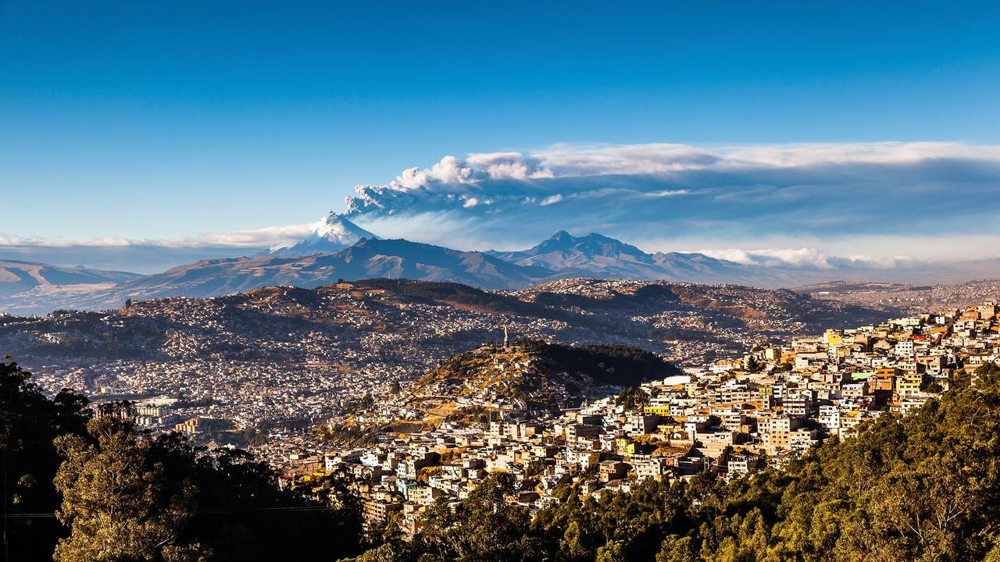
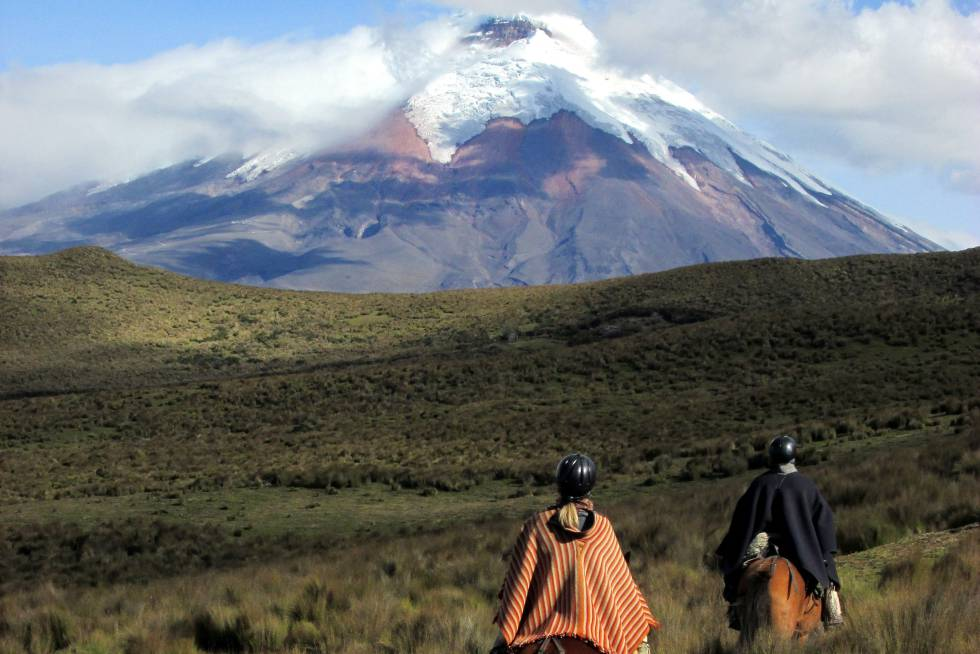

Las Galápagos son conocidas por sus numerosas especies endémicas y por los estudios de Charles Darwin que le llevaron a establecer su teoría de la evolución por la selección natural. Son llamadas, turísticamente, las Islas Encantadas, denominación que se ganó el archipiélago en el siglo XVI por su grandiosa biodiversidad de flora y fauna, heredando el nombre por generaciones.
La principal atracción del lugar es el monumento a la Mitad del Mundo, el cual tiene como finalidad el resaltar la ubicación exacta de la línea Ecuatorial o Ecuador, del cual el país toma su nombre, y destacar también la misión geodésica franco-española del siglo XVIII que ubicó el sitio aproximado por el cual pasa la línea equinoccial.
También se encuentra el Museo Etnográfico Mitad del Mundo, un museo sobre la etnografía indígena de Ecuador. Una pequeña ciudad que rodea el monumento actúa como centro turístico, ofreciendo una réplica de una ciudad colonial española llamada "Ciudad Mitad del Mundo".